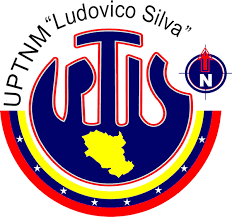

Es la actividad que deben desarrollar en las comunidades los estudiantes de educación universitaria que cursen estudios de formación profesional, aplicando los conocimientos científicos, técnicos, culturales, deportivos y humanísticos adquiridos durante su formación académica, en beneficio de la comunidad. Es una actividad estrictamente de exteriorización de valores que permitirá potenciar el compromiso que tiene la universidad de integrarse con el entorno social.
VolverContribuir con la formación integral del estudiante, a través del desarrollo de actividades en las comunidades, aplicando los conocimientos adquiridos durante su formación académica, en beneficio de la comunidad, para cooperar con su participación en la disminución de los problemas que la afectan, desarrollando alternativas comunicacionales que contribuyan a solucionarlos, respondiendo así, al compromiso que se tiene con la sociedad.

■Tiene como objeto la prestación del servicio comunitario del estudiante de educación universitaria,
que a nivel de pregrado aspire ejercer cualquier profesión.
■El servicio comunitario es un requisito para la obtención del titulo de educación superior.
Esta ley se regirá por los principios constitucionales de:
■ Solidaridad
■ Responsabilidad social
■ Igualdad
■ Cooperación
■ Corresponsabilidad
■ Participación ciudadana
■ Asistencia humanitaria y alteridad.
De acuerdo a los Fines de la Ley de Servicio Comunitario y del Reglamento del Servicio Comunitario, se constituye en una instancia para la formación integral del estudiante, que permite: Fomentar la solidaridad y el compromiso con la comunidad como norma ética y ciudadana; Hacer un acto de reciprocidad con la sociedad; Enriquecer la actividad de educación superior, a través del aprendizaje servicio, con la aplicación de los conocimientos adquiridos durante la formación académica; Integrar a la UPTNM “Ludovico Silva” con la comunidad, para contribuir al desarrollo de la sociedad venezolana, y formar, a través del aprendizaje servicio, el capital social en el país.
Volver